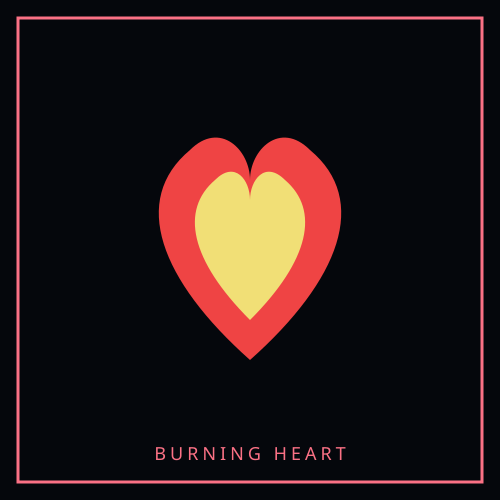

The Burning Hope — 타오르는 희망
“Hope is not the opposite of Han. Hope is Han that agreed to be carried.”

Overview
The Burning Hope — 타오르는 희망 is a Hope Transformation — sorrow that the Hand of Hope turned into a bonded hope entity without erasing the wound that made it. It is borne by Hwaran (화란), The Refugee. Unlike a Sorrow Entity, it is not contained in a cell and does not yield M.A.W. by extraction. It remains stable only while the bond holds.
Hope Transformations sit beside Sorrow Entities, not inside them. The Reverie Directorate catalogues Sorrow under SECC. Dawn Initiative bearers catalogue Hope under HT designations. The grief is still present; it is made usable.
Classification
| Designation | HT-IV-HF-009 [S] |
|---|---|
| Registry | HT-009 |
| Category | Hope Transformation / Hope Bond |
| Aspect | Hope-Flame |
| Coherence | IV — Entity |
| Intensity | δ — Bright |
| Element | Flame — determination and courage |
| Manifestation | Subject — bonded combat flame |
| Bearer | Hwaran (화란), The Refugee |
| Bearer role | Fighter of the Dawn Initiative |
| Source sorrow | Hope transformed from Hwaran’s sorrow over leaving family behind in dying Cheonbulok and the belief that survival made them a coward |
| Status | Stable while bonded; bearer-dependent |
Appearance
The Burning Hope is a small golden-orange flame with a white center. Unlike the Gentle Flame, it produces heat and can burn through obstacles. It circles Hwaran’s weapon arm or rests above the shoulder like a torch carried by an invisible hand.
Its fire changes direction in strong wind but never goes out. The flame burns hottest when Hwaran is protecting someone who cannot escape, not when pursuing an enemy.
Origin
Hwaran fled Cheonbulok as the Furnace cracked. Their family remained behind, and Hwaran carried the belief that every step away from the city was proof of cowardice.
The Burning Hope appeared when Hwaran returned with the Lantern and found refugees refusing to leave a collapsing shelter because they feared abandoning one another. Hwaran entered the shelter instead of ordering them out from safety. The flame formed around their hand and burned a passage through the blocked exit.
It did not lead Hwaran back to the family they had lost. It gave them strength to stop abandoning the living.
Hope function
The Burning Hope provides determination, physical endurance, and focused courage during overwhelming danger. It converts fear and survivor’s guilt into forward motion without requiring Hwaran to deny either feeling.
- Burn through Han-crystal barriers and hostile restraints.
- Strengthen Hwaran during rescue and combat operations.
- Ignite courage in people who are physically able to act but emotionally frozen.
- Maintain a protective flame in extreme cold, darkness, or Furnace conditions.
- Turn a retreat into an organized evacuation rather than a panic response.
It cannot make Hwaran fearless, erase guilt, or justify reckless sacrifice.
Bearer cost
Hwaran experiences the fear of people following the flame and the grief of everyone left behind. Repeated use causes fever, accelerated aging, scorched palms, and an inability to distinguish bravery from self-destruction.
The flame dims whenever Hwaran refuses help. It burns brightest when Hwaran allows someone else to carry them.
See Hope Transformations and Dawn of Hope.